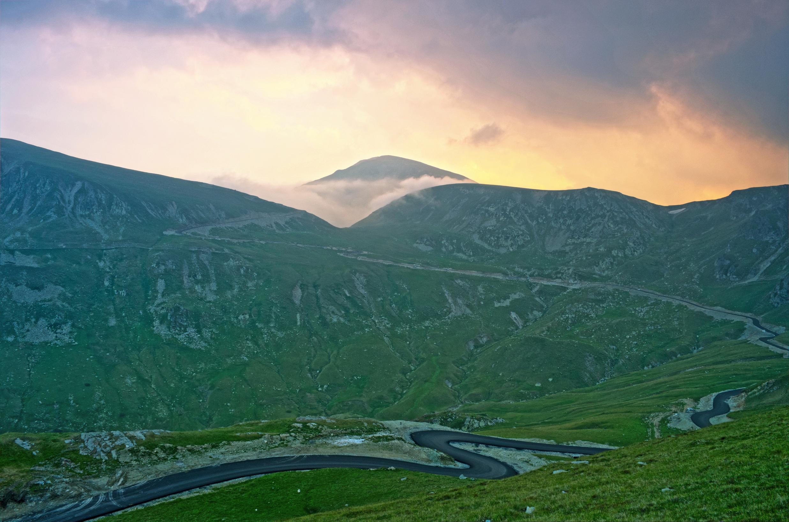

Transalpina
Ce este Transalpina?
Transalpina este un drum național din Munții Parâng, în Carpații Meridionali. Este cea mai înaltă șosea din România, având punctul cel mai înalt în Pasul Urdele (la 2.145 m). Drumul face legătura între orașele Novaci din județul Gorj și Sebeș din județul Alba. Fiind un drum montan, este închis pe perioada iernii.
Transalpina străbate patru județe – Gorj, Vâlcea, Sibiu, Alba – traversând Munții Parâng de la sud la nord, altitudinea cea mai mare având-o pe o porțiune de aproximativ 20 de km, în județele Gorj și Vâlcea, unde se prezintă ca o "șosea de creastă", trecând la mică depărtare de vârfurile Dengheru (2.084 m), Păpușa (2.136 m), Urdele (2.228 m), Iezer (2.157 m) și Muntinu (2.062 m).
Istoria Transalpinei
Începuturile acestui drum sunt neclare. Unele surse susțin că a fost construit prima dată de legiunile romane în timpul războaielor cu dacii, motiv pentru care pe hărțile de istorie este trecut sub denumirea de „coridorul IV strategic roman”.
Există și o legendă locală care spune că, la sfârșitul secolului XVIII și la începutul secolului XIX, fiecare familie a participat la construirea unei porțiuni din acest drum, în funcție de posibilitățile fizice și financiare ale sale.
Potrivit altor surse, șoseaua a fost refăcută și pietruită de germani în timpul Primului Război Mondial, din rațiuni militare, însă a fost foarte puțin folosită.
Cert este că acest traseu, cunoscut ca "Poteca Dracului", a fost inițial o potecă de munte, folosită de către păstorii din Mărginimea Sibiului pentru a traversa munții cu turmele de oi în Țara Românească.
În lucrarea sa Istoria Olteniei supt austriaci (1718-1739), istoricul Constantin C. Giurescu arată că încă din anul 1731 autoritățile austriece propuneau construirea unui drum transcarpatic pe traseul vechiului drum de transhumanță ce lega Transilvania de Oltenia.
Având în vedere învățămintele din Primul Război Mondial, regele Carol al II-lea a dorit să aibă la dispoziție un drum strategic, pentru artileria montană, trasă de cai, care să poată fi parcurs de trupele care se mișcau între Valahia și Transilvania. Pentru stabilirea traseului drumului, primul-ministru Gheorghe Tătărăscu a plecat pe munte de la Novaci la Lotru, însotit de 20 de călăreți din Novaci, conduși de învățătorul Ion D. Giurgiulan. În urma acestei acțiuni, Gheorghe Tătărăscu a inaugurat lucrările de construcție a drumului pe platoul Novaciului.
Lucrările de refacere decise de rege au avut loc în perioada 1934-1939. La inaugurarea drumului, în anul 1939, a participat și regele Carol al II-lea, însoțit de viitorul rege Mihai I, precum și primul-ministru Gheorghe Tătărescu și soția sa Arethia. Aceștia au parcurs întregul traseu al drumului la bordul unei mașini de teren, la volan aflându-se chiar regele Carol al II-lea. După inaugurare, drumul a fost cunoscut sub denumirea de Drumul Regal sau Drumul Regelui, care a înlocuit denumirea populară de Poteca Dracului.
Drumul a mai fost reabilitat în timpul celui de-al Doilea Război Mondial, când germanii aveau nevoie de această cale de acces din motive militare. De atunci a fost foarte puțin întreținut.
După revoluția din decembrie 1989 drumul nu a mai fost întreținut, o parte a zidurilor de sprijin au fost stricate, piatra fiind furată și utilizată la realizarea fundațiilor unor vile construite la Rânca. În anul 2009, Consiliul Județean Gorj a început lucrările de modernizare a drumului, lucrări care au fost finalizate în anul 2012.
Obiective turistice și trasee pe Transalpina
 Cheile și Valea Gilortului
Cheile și Valea Gilortului
 Cheile Olteţului
Cheile Olteţului
 Peștera Polovragi
Peștera Polovragi
 Peștera Muierilor
Peștera Muierilor
 Lacul Gâlcescu
Lacul Gâlcescu
 Valea Frumoasei
Valea Frumoasei
{kind=link}
Informatii pentru turisti
Transalpina nu are un calendar fix de circulație. În zona cea mai înaltă, aflata între Râncă și Obârșia Lotrului, zăpada persista de obicei din luna noiembria și până în mai-iunie. În funcție de venirea și topirea zăpezii drumul este închis, respectiv deschis traficului, la date diferite în fiecare an.
În cele mai multe cazuri însă, circulația pe Transalpina este deschisă doar în intervalul 1 iulie – 31 octombrie, în fiecare an. Din 1 noiembrie până în 30 iunie traseul este închis.
Transalpina poate fi tranzitată doar pe parcursul zilei, de către autoturisme care cântăresc maximum 7,5 tone, cu o viteză maximă de 30 de kilometri pe oră.
Pe timp de vară, ca și pe Transfăgărășan, sunt impuse restricții în ceea ce privește perioada de întuneric (orele 22:00 – 6:00). Traseul este unul periculos, cu multe viraje și curbe în ac de păr, nu sunt prevăzute elemente reflectorizante, iar riscul căderii în gol este unul destul de mare.